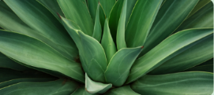

Selecciona uno de los juegos disponibles para aprender sobre plantas y cuidar el bosque.
❓ Trivia
Juego 1
Un recorrido interactivo para identificar plantas medicinales y sus usos.
Ir al juego 1 → 🧠 Memoria
🧠 Memoria
Juego 2
Juego de memoria: voltea las cartas y empareja cada vegetal con su nombre.
Ir al juego 2 →
🌳 ArrastrarJuego 3
Arrastra y clasifica: ordena las especies del bosque en su grupo correcto.
Ir al juego 3 →